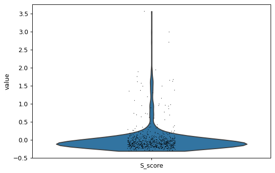
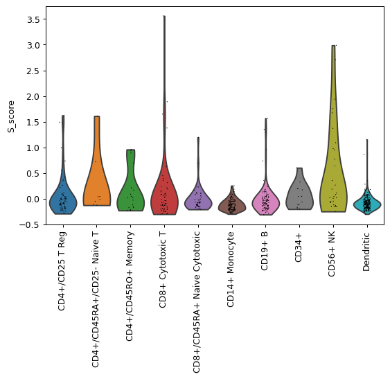
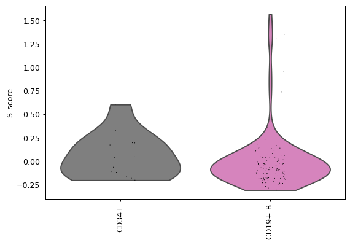
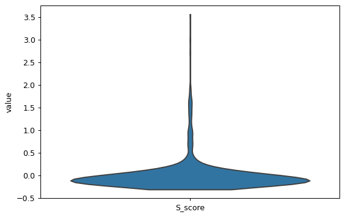

scanpy.pl.violin
- scanpy.pl.violin(adata, keys, groupby=None, log=False, use_raw=None, stripplot=True, jitter=True, size=1, layer=None, scale='width', order=None, multi_panel=None, xlabel='', ylabel=None, rotation=None, show=None, save=None, ax=None, **kwds)
Violin plot.
Wraps
seaborn.violinplot()forAnnData.- Parameters
- adata :
AnnDataAnnData Annotated data matrix.
- keys :
str|Sequence[str]Union[str,Sequence[str]] Keys for accessing variables of
.var_namesor fields of.obs.- groupby :
str|NoneOptional[str] (default:None) The key of the observation grouping to consider.
- log :
boolbool(default:False) Plot on logarithmic axis.
- use_raw :
bool|NoneOptional[bool] (default:None) Whether to use
rawattribute ofadata. Defaults toTrueif.rawis present.- stripplot :
boolbool(default:True) Add a stripplot on top of the violin plot. See
stripplot().- jitter :
float|boolUnion[float,bool] (default:True) Add jitter to the stripplot (only when stripplot is True) See
stripplot().- size :
intint(default:1) Size of the jitter points.
- layer :
str|NoneOptional[str] (default:None) Name of the AnnData object layer that wants to be plotted. By default adata.raw.X is plotted. If
use_raw=Falseis set, thenadata.Xis plotted. Iflayeris set to a valid layer name, then the layer is plotted.layertakes precedence overuse_raw.- scale : {‘area’, ‘count’, ‘width’}
Literal[‘area’, ‘count’, ‘width’] (default:'width') The method used to scale the width of each violin. If ‘width’ (the default), each violin will have the same width. If ‘area’, each violin will have the same area. If ‘count’, a violin’s width corresponds to the number of observations.
- order :
Sequence[str] |NoneOptional[Sequence[str]] (default:None) Order in which to show the categories.
- multi_panel :
bool|NoneOptional[bool] (default:None) Display keys in multiple panels also when
groupby is not None.- xlabel :
strstr(default:'') Label of the x axis. Defaults to
groupbyifrotationisNone, otherwise, no label is shown.- ylabel :
str|Sequence[str] |NoneUnion[str,Sequence[str],None] (default:None) Label of the y axis. If
NoneandgroupbyisNone, defaults to'value'. IfNoneandgroubpyis notNone, defaults tokeys.- rotation :
float|NoneOptional[float] (default:None) Rotation of xtick labels.
- show :
bool|NoneOptional[bool] (default:None) Show the plot, do not return axis.
- save :
str|bool|NoneUnion[str,bool,None] (default:None) If
Trueor astr, save the figure. A string is appended to the default filename. Infer the filetype if ending on {'.pdf','.png','.svg'}.- ax :
Axes|NoneOptional[Axes] (default:None) A matplotlib axes object. Only works if plotting a single component.
- **kwds
Are passed to
violinplot().
- adata :
- Returns
A
Axesobject ifaxisNoneelseNone.
Examples
import scanpy as sc adata = sc.datasets.pbmc68k_reduced() sc.pl.violin(adata, keys='S_score')
 Plot by category. Rotate x-axis labels so that they do not overlap.
sc.pl.violin(adata, keys='S_score', groupby='bulk_labels', rotation=90)
 Set order of categories to be plotted or select specific categories to be plotted.
groupby_order = ['CD34+', 'CD19+ B'] sc.pl.violin(adata, keys='S_score', groupby='bulk_labels', rotation=90, order=groupby_order)
 Plot multiple keys.
sc.pl.violin(adata, keys=['S_score', 'G2M_score'], groupby='bulk_labels', rotation=90)

For large datasets consider omitting the overlaid scatter plot.
sc.pl.violin(adata, keys='S_score', stripplot=False)
 See also